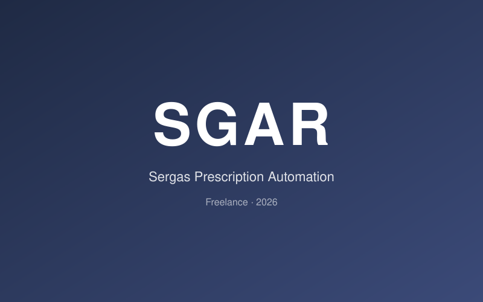
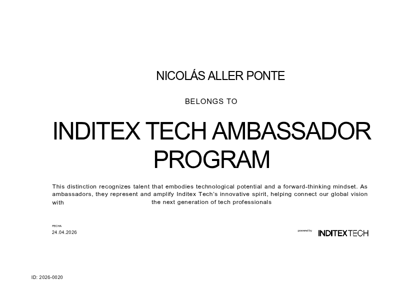

I hold a Bachelor's Degree in Data Science & Engineering from Universidade da Coruña (graduated July 2026), with my Bachelor's Thesis on the computational optimization of ReliefF graded 10/10 with Honors (Matricula de Honor). Since May 2026 I work as a freelance developer, building SGAR, a product that automates Sergas prescription handling in pharmacies, and I am an Inditex Tech Ambassador, representing Inditex Tech at universities and tech events. Previously, I was a Research Assistant at the Inditex-UDC AI Chair in Green Algorithms (until March 2026), developing feature-selection systems for AI models, and before that I interned as an AI Engineer at Gradiant, building computer vision pipelines for car damage detection.
My stack spans the full data lifecycle: from HPC and parallel computing (C/C++, CUDA, MPI) to deep learning (PyTorch, TensorFlow), data engineering (Spark, SQL, Docker, AWS/GCP), and NLP/Computer Vision.
CV Thesis (10, with Honors)My first product as a freelance developer (since May 2026). End-to-end system that automates Sergas prescription handling in pharmacies, replacing a multi-hour daily manual workflow. Built iteratively with the pharmacist as end user - discovery meetings, an on-site technical visit and weekly UX adjustments - with strict LOPD compliance for medical data (anonymous logging, no personal health information stored). Production deployment planned for 2026.

2nd Prize at GDG Challenge (Impacthon 2026). Web portal for protein structure prediction via AlphaFold2 without HPC expertise, featuring interactive 3D visualization (Mol*), PAE heatmaps and pLDDT confidence coloring. Multi-agent A2A system with 4 specialist agents powered by Gemini 2.5 Flash, deployed on Google Cloud Run.
Check out more of my work on GitHub
GitHub ProfileOn March 1, 2026, we presented our project at HackUDC for the InditexTech challenge. Following a stellar presentation before the Inditex team and GPUL, we were honored with the 1st Prize for Best Use of Open Source AI and the 2nd Prize in the Inditex-Tech Challenge.
In April 2026, we competed at the GDG Challenge (Impacthon 2026) with LocalFold - a web platform for protein structure prediction using AlphaFold2, a multi-agent A2A system powered by Gemini 2.5 Flash, and deployment on Google Cloud Run. We were awarded 2nd Prize.
I was selected to join the Inditex Tech Ambassador Program as part of a group of young professionals, helping share Inditex Tech's innovation vision and building bridges with universities and emerging tech talent.

Interested in collaborating or just want to say hi?
Say Hello